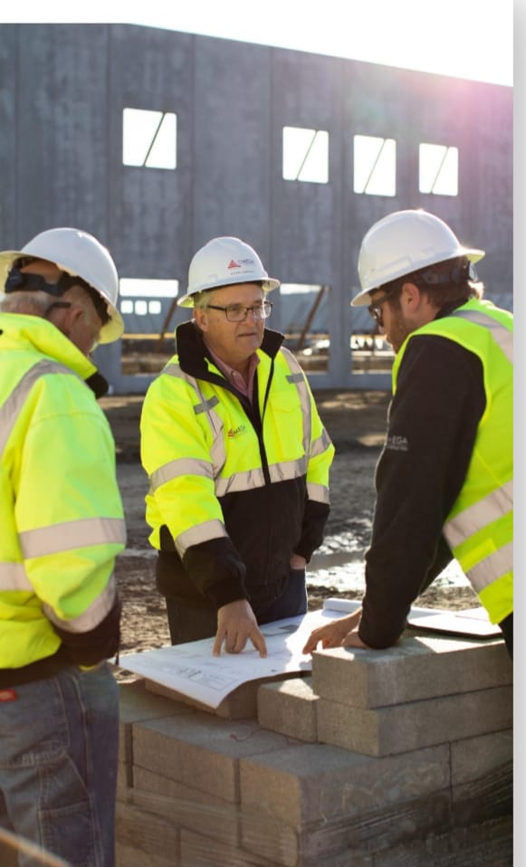
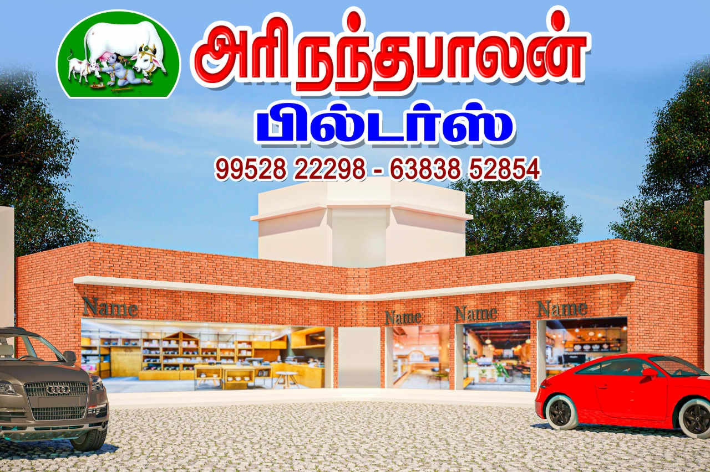

Arinandhablan construction exists to build great teams great relations and great projects
Arinandhabalan Construction has been serving the construction industry for over four decades. Our team has “best in class” experience with a diverse project portfolio in the markets we serve. We are headquartered in Winston-Salem, North Carolina with additional offices in Savannah, Georgia; Greenville, South Carolina. it is uniquely positioned to be the contractor of choice throughout the Southeast.
We have an unparalleled commitment to uphold our core values, every day. We care about our people, our partners, our work, our communities, and the relationships we build. We invest in them and make it a priority to operate with integrity and excellence, so our teams are well-positioned for the future
contact info
owner : M.Kannancontact : 9952822298
E-mail : arinandhabalanabh@gmail.com
Address:no2 ,ava chakaravarthi complex ,Firstfloor,Madurai main road,therkutheru,Melur